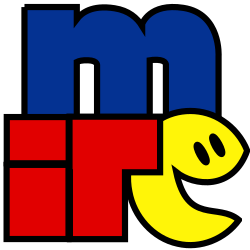

Bate papo sobre:
carreira front-end e mercado
@guiseekUm pouco da minha jornada neste mundo
Primeiras motivações
Não comecei com Hello world
HuAhUaHuAhUaHuAhUa (#466)
f4 echo -a HuAhUaHuAhUaHuAhUaHuAhUa (# %rir ) | inc %rir
Sim...
Motivo: UI / UX
Fuçava e melhorava minha própria experiência em scripts de terceiros.
Comecei criar meus próprios scripts, pensando na utilidade para outras pessoas.
Decidi que iria trabalhar com Internet!
- Curso de GNU/Linux
- Graduação em Redes de Computadores
- Graduação em Sistemas para Internet
Durante o curso de Linux
- Logirisco
-
- Operador
- Supervisor (madrugada)
-
Programador
*Trabalhava, estudava e servia o exército
Durante a graduação de Redes
- Brasil Telecom
-
Técnico ADSL
*Infra de distribuição geral e local - Unimed
- Manutenção e Infra
Durante a graduação de Sistemas
- Rockmedia
- Co-fundador, CTO e programador
Depois da graduação
- Gumga
- Líder front-end
- Eventos do Bem
- Co-fundador e líder front-end
Evolução Web
| 1. HTML | 6. Zend 1 |
| 2. CSS | 7. Silex |
| 3. JavaScript | 8. Zend 2 |
| 4. PHP | 9. AngularJS |
| 5. jQuery | 10. Angular |
Aprendizado
- Logirisco
- Implementar requisitos internos e regras de negócio do ramo de logística com rastreamento.
Aprendizado
- Brasil Telecom
- Conversar com clientes finais mais que tudo, mas a parte de infra com equipamentos utilizados para atender a população também me deu uma boa noção de como funciona nossa rede.
Aprendizado
- Unimed
- Resolver problemas recebidos via software, comunicação com usuário e aprendizado com pessoas mais experientes da equipe.
Aprendizado
- Rockmedia
- Participação em todas as etapas de desenvolvimento de websites e sistemas web.
Aprendizado
- Gumga
- Desenvolvimento de componentes reutilizáveis para aplicações AngularJS.
Aprendizado
- Eventos do Bem
- Responsável de front-end, desde os requisitos de funcionalidades e comportamentos UI / UX até a implementação final.
Experiência
Trabalhar com serviços / projetos
- Custoso e desgastante;
- Sempre em busca do próximo projeto;
- Clientes "pequenos" sempre querem o máximo pagando o mínimo;
- Clientes "grandes" levam a risca o contrato, fique atento ao escopo definido, principalmente as features sugeridas e não aceitas;
- Apresente as features implementadas por etapas e tenha registros do OK para continuidade;
- Tente imeplementar features de forma genérica e reutilizável para outros projetos;
- Partes que provavelmente serão reutilizadas, use um tempo a extra para melhorias visando a redução de tempo para o próximo;
Trabalhar para uma empresa ou grupo
- "Estável", mas trabalhe!;
- Demonstre interesse e capacidade;
- Vista a camisa e se esforce para a melhoria contínua do projeto ou produto;
- Siga as boas práticas e participe da comunidade;
- Saiba trabalhar em equipe, sem interação você ficará de fora;
-
Se você acredita em algo, convença a equipe e seus superiores com argumentos fundamentados. Se a resposta for negativa, tente entender o lado da empresa!;
- Caso entendido, prossiga com o sprint;
- Caso não faça sentido e fique insatisfeito, procure outro ambiente de trabalho;
- O importante é trabalhar num ambiente agradável e alinhado com seus ideais;
Acreditar numa ideia e investir seu tempo
- Sem garantia, valide a ideia antes de investir seu tempo;
-
Se dedique e trabalhe da melhor forma onde for necessário;
*Uma startup não tem departamentos, ajude onde puder sem ser mesquinho -
Siga as boas práticas e use a comunidade;
*Se possível coloque no Github como código livre e divulgue o repositório - Saiba trabalhar em equipe e tenha uma boa comunicação com seus sócios, sem isso você ficará de fora;
- Se você é responsável de algo, tome a frente que cabe à sua competência. Se preciso, mostre casos que validem sua afirmação ou argumente para tal;
-
Saiba quando você está errado e assuma, todos perderão menos com essa atitude;
*Depois do erro assumido, procure a solução

Aposte no Código Livre !
Sempre apostei na ideologia onde tive chance.
Convenci o grupo SBM a colocar os componentes front-end e base back-end abertos no GitHub.
O front-end da Eventos do Bem está livre no GitHub e já recebemos algumas contribuições.
 Dúvidas?
Dúvidas?